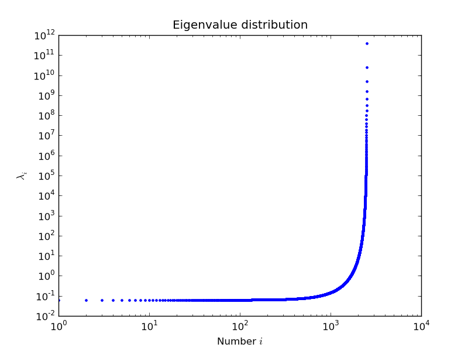

Linear System Solvers#
sparse matrix/eigenvalue problem solvers live in
scipy.sparse.linalgthe submodules:
dsolve: direct factorization methods for solving linear systemsisolve: iterative methods for solving linear systemseigen: sparse eigenvalue problem solvers
All solvers are accessible from:
import scipy as sp
sp.sparse.linalg.__all__
['ArpackError',
'ArpackNoConvergence',
'LaplacianNd',
'LinearOperator',
'MatrixRankWarning',
'SuperLU',
'aslinearoperator',
'bicg',
'bicgstab',
'cg',
'cgs',
'dsolve',
'eigen',
'eigs',
'eigsh',
'expm',
'expm_multiply',
'factorized',
'funm_multiply_krylov',
'gcrotmk',
'gmres',
'interface',
'inv',
'is_sptriangular',
'isolve',
'lgmres',
'lobpcg',
'lsmr',
'lsqr',
'matfuncs',
'matrix_power',
'minres',
'norm',
'onenormest',
'qmr',
'spbandwidth',
'spilu',
'splu',
'spsolve',
'spsolve_triangular',
'svds',
'tfqmr',
'use_solver']
Sparse Direct Solvers#
default solver: SuperLU
included in SciPy
real and complex systems
both single and double precision
optional: umfpack
real and complex systems
double precision only
recommended for performance
wrappers now live in
scikits.umfpackcheck-out the new
scikits.suitesparseby Nathaniel Smith
Examples#
Import the whole module, and see its docstring:
help(sp.sparse.linalg.spsolve)
Help on function spsolve in module scipy.sparse.linalg._dsolve.linsolve:
spsolve(A, b, permc_spec=None, use_umfpack=True)
Solve the sparse linear system Ax=b, where b may be a vector or a matrix.
Parameters
----------
A : ndarray or sparse array or matrix
The square matrix A will be converted into CSC or CSR form
b : ndarray or sparse array or matrix
The matrix or vector representing the right hand side of the equation.
If a vector, b.shape must be (n,) or (n, 1).
permc_spec : str, optional
How to permute the columns of the matrix for sparsity preservation.
(default: 'COLAMD')
- ``NATURAL``: natural ordering.
- ``MMD_ATA``: minimum degree ordering on the structure of A^T A.
- ``MMD_AT_PLUS_A``: minimum degree ordering on the structure of A^T+A.
- ``COLAMD``: approximate minimum degree column ordering [1]_, [2]_.
use_umfpack : bool, optional
if True (default) then use UMFPACK for the solution [3]_, [4]_, [5]_,
[6]_ . This is only referenced if b is a vector and
``scikits.umfpack`` is installed.
Returns
-------
x : ndarray or sparse array or matrix
the solution of the sparse linear equation.
If b is a vector, then x is a vector of size A.shape[1]
If b is a matrix, then x is a matrix of size (A.shape[1], b.shape[1])
Notes
-----
For solving the matrix expression AX = B, this solver assumes the resulting
matrix X is sparse, as is often the case for very sparse inputs. If the
resulting X is dense, the construction of this sparse result will be
relatively expensive. In that case, consider converting A to a dense
matrix and using scipy.linalg.solve or its variants.
References
----------
.. [1] T. A. Davis, J. R. Gilbert, S. Larimore, E. Ng, Algorithm 836:
COLAMD, an approximate column minimum degree ordering algorithm,
ACM Trans. on Mathematical Software, 30(3), 2004, pp. 377--380.
:doi:`10.1145/1024074.1024080`
.. [2] T. A. Davis, J. R. Gilbert, S. Larimore, E. Ng, A column approximate
minimum degree ordering algorithm, ACM Trans. on Mathematical
Software, 30(3), 2004, pp. 353--376. :doi:`10.1145/1024074.1024079`
.. [3] T. A. Davis, Algorithm 832: UMFPACK - an unsymmetric-pattern
multifrontal method with a column pre-ordering strategy, ACM
Trans. on Mathematical Software, 30(2), 2004, pp. 196--199.
https://dl.acm.org/doi/abs/10.1145/992200.992206
.. [4] T. A. Davis, A column pre-ordering strategy for the
unsymmetric-pattern multifrontal method, ACM Trans.
on Mathematical Software, 30(2), 2004, pp. 165--195.
https://dl.acm.org/doi/abs/10.1145/992200.992205
.. [5] T. A. Davis and I. S. Duff, A combined unifrontal/multifrontal
method for unsymmetric sparse matrices, ACM Trans. on
Mathematical Software, 25(1), 1999, pp. 1--19.
https://doi.org/10.1145/305658.287640
.. [6] T. A. Davis and I. S. Duff, An unsymmetric-pattern multifrontal
method for sparse LU factorization, SIAM J. Matrix Analysis and
Computations, 18(1), 1997, pp. 140--158.
https://doi.org/10.1137/S0895479894246905T.
Examples
--------
>>> import numpy as np
>>> from scipy.sparse import csc_array
>>> from scipy.sparse.linalg import spsolve
>>> A = csc_array([[3, 2, 0], [1, -1, 0], [0, 5, 1]], dtype=float)
>>> B = csc_array([[2, 0], [-1, 0], [2, 0]], dtype=float)
>>> x = spsolve(A, B)
>>> np.allclose(A.dot(x).toarray(), B.toarray())
True
Both superlu and umfpack can be used (if the latter is installed) as follows.
Prepare a linear system:
import numpy as np
mtx = sp.sparse.spdiags([[1, 2, 3, 4, 5], [6, 5, 8, 9, 10]], [0, 1], 5, 5, "csc")
mtx.toarray()
array([[ 1, 5, 0, 0, 0],
[ 0, 2, 8, 0, 0],
[ 0, 0, 3, 9, 0],
[ 0, 0, 0, 4, 10],
[ 0, 0, 0, 0, 5]])
rhs = np.array([1, 2, 3, 4, 5], dtype=np.float32)
Solve as single precision real:
mtx1 = mtx.astype(np.float32)
x = sp.sparse.linalg.spsolve(mtx1, rhs, use_umfpack=False)
print(x)
[106. -21. 5.5 -1.5 1. ]
print("Error: %s" % (mtx1 * x - rhs))
Error: [0. 0. 0. 0. 0.]
Solve as double precision real:
mtx2 = mtx.astype(np.float64)
x = sp.sparse.linalg.spsolve(mtx2, rhs, use_umfpack=True)
print(x)
[106. -21. 5.5 -1.5 1. ]
print("Error: %s" % (mtx2 * x - rhs))
Error: [0. 0. 0. 0. 0.]
Solve as single precision complex:
mtx1 = mtx.astype(np.complex64)
x = sp.sparse.linalg.spsolve(mtx1, rhs, use_umfpack=False)
print(x)
[106. +0.j -21. +0.j 5.5+0.j -1.5+0.j 1. +0.j]
print("Error: %s" % (mtx1 * x - rhs))
Error: [0.+0.j 0.+0.j 0.+0.j 0.+0.j 0.+0.j]
Solve as double precision complex:
mtx2 = mtx.astype(np.complex128)
x = sp.sparse.linalg.spsolve(mtx2, rhs, use_umfpack=True)
print(x)
[106. +0.j -21. +0.j 5.5+0.j -1.5+0.j 1. +0.j]
print("Error: %s" % (mtx2 * x - rhs))
Error: [0.+0.j 0.+0.j 0.+0.j 0.+0.j 0.+0.j]
Iterative Solvers#
the
isolvemodule contains the following solvers:bicg(BIConjugate Gradient)bicgstab(BIConjugate Gradient STABilized)cg(Conjugate Gradient) - symmetric positive definite matrices onlycgs(Conjugate Gradient Squared)gmres(Generalized Minimal RESidual)minres(MINimum RESidual)qmr(Quasi-Minimal Residual)
Common Parameters#
mandatory:
A: The N-by-N matrix of the linear system.b: Right hand side of the linear system. Has shape (N,) or (N,1).
optional:
x0: Starting guess for the solution.tol: Relative tolerance to achieve before terminating.maxiter: Maximum number of iterations. Iteration will stop after maxiter steps even if the specified tolerance has not been achieved.M: Preconditioner for A. The preconditioner should approximate the inverse of A. Effective preconditioning dramatically improves the rate of convergence, which implies that fewer iterations are needed to reach a given error tolerance.callback: User-supplied function to call after each iteration. It is called ascallback(xk), wherexkis the current solution vector.
LinearOperator Class#
common interface for performing matrix vector products
useful abstraction that enables using dense and sparse matrices within the solvers, as well as matrix-free solutions
has
shapeandmatvec()(+ some optional parameters)
Here is an example:
import numpy as np
import scipy as sp
def mv(v):
return np.array([2 * v[0], 3 * v[1]])
A = sp.sparse.linalg.LinearOperator((2, 2), matvec=mv)
A
<2x2 _CustomLinearOperator with dtype=int8>
A.matvec(np.ones(2))
array([2., 3.])
A * np.ones(2)
array([2., 3.])
A Few Notes on Preconditioning#
problem specific
often hard to develop
if not sure, try ILU
available in
scipy.sparse.linalgasspilu()
Eigenvalue Problem Solvers#
The eigen module#
arpack: a collection of Fortran77 subroutines designed to solve large scale eigenvalue problemslobpcg: (Locally Optimal Block Preconditioned Conjugate Gradient Method); * works very well in combination with PyAMGexample by Nathan Bell:
Another example by Nils Wagner:
Output:
$ python examples/lobpcg_sakurai.py
Results by LOBPCG for n=2500
[ 0.06250083 0.06250028 0.06250007]
Exact eigenvalues
[ 0.06250005 0.0625002 0.06250044]
Elapsed time 7.01
